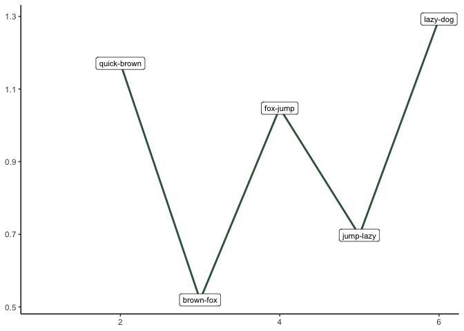

Overview
‘semdistflow’ transforms any user-specified text into sequential bigrams (e.g. ‘The dog drinks the milk’ to dog-drink, drink-milk, etc.). The package can compute metrics of semantic distance for each bigram. Users have many options for parameterizing semantic distance and tailoring their analyses to their own unique constraints (e.g., omitting stopwords, lemmatizing tokens, dimensionality of word embeddings).
Installation
You can install the development version of semdistflow from GitHub with:
# install.packages("devtools")
devtools::install_github("Reilly-ConceptsCognitionLab/semdistflow")
#> Skipping install of 'semdistflow' from a github remote, the SHA1 (bc8d9b9a) has not changed since last install.
#> Use `force = TRUE` to force installationExample of Cleaning Function
This is a basic example which shows you how the cleanme function works:
library(semdistflow)
library(tidyverse)
doc_id <- "fox"
doc_text <- "The quick brown fox jumps over the lazy dog."
fox_text <-as.data.frame(cbind(doc_id,doc_text))
fox_text
#> doc_id doc_text
#> 1 fox The quick brown fox jumps over the lazy dog.
fox_clean <- cleanme(fox_text)
#> Performing cleaning retaining pronouns
fox_clean
#> # A tibble: 1 × 3
#> # Groups: doc_id [1]
#> doc_id doc_text doc_clean
#> <chr> <chr> <chr>
#> 1 fox The quick brown fox jumps over the lazy dog. " quick brown fox jumps l…Example of Semantic Distance Function
This is a basic example which shows you how the cleanme function works:
fox_token <-fox_clean %>%
group_by(doc_id, doc_text) %>%
tidytext::unnest_tokens(word, doc_clean, drop=F)
fox_token$lemma<- textstem::lemmatize_words(fox_token$word)
fox_token
#> # A tibble: 6 × 5
#> # Groups: doc_id, doc_text [1]
#> doc_id doc_text doc_clean word lemma
#> <chr> <chr> <chr> <chr> <chr>
#> 1 fox The quick brown fox jumps over the lazy dog. " quick brown… quick quick
#> 2 fox The quick brown fox jumps over the lazy dog. " quick brown… brown brown
#> 3 fox The quick brown fox jumps over the lazy dog. " quick brown… fox fox
#> 4 fox The quick brown fox jumps over the lazy dog. " quick brown… jumps jump
#> 5 fox The quick brown fox jumps over the lazy dog. " quick brown… lazy lazy
#> 6 fox The quick brown fox jumps over the lazy dog. " quick brown… dog dog
fox_dist <- bigram_cos_sim(targetdf = fox_token, lookupdb = semdist15, colname1 = lemma, colname2 = word, flipped = T)
#> Isolating join columns
#> Adding missing grouping variables: `doc_text`
#> Joining data + print
#> Calculating pairwise cosine similarities
#> Writing output dataframe
fox_dist
#> # A tibble: 6 × 8
#> doc_id doc_text doc_clean word lemma pair cosine.dist flipped_cosine.…
#> <chr> <chr> <chr> <chr> <chr> <chr> <dbl> <dbl>
#> 1 fox The quick bro… " quick … quick quick NA-q… NA NA
#> 2 fox The quick bro… " quick … brown brown quic… -0.171 1.17
#> 3 fox The quick bro… " quick … fox fox brow… 0.481 0.519
#> 4 fox The quick bro… " quick … jumps jump fox-… -0.0473 1.05
#> 5 fox The quick bro… " quick … lazy lazy jump… 0.303 0.697
#> 6 fox The quick bro… " quick … dog dog lazy… -0.293 1.29
ggplot(fox_dist, aes(x=as.numeric(row.names(fox_dist)), y=flipped_cosine.dist)) + geom_line(color="#02401BD9", size= 1) + theme_classic() + xlab(NULL) + ylab(NULL) + geom_label(aes(label=pair), size=3, data=fox_dist)
#> Warning: Removed 1 row(s) containing missing values (geom_path).
#> Warning: Removed 1 rows containing missing values (geom_label).